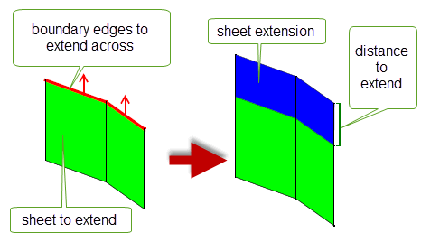
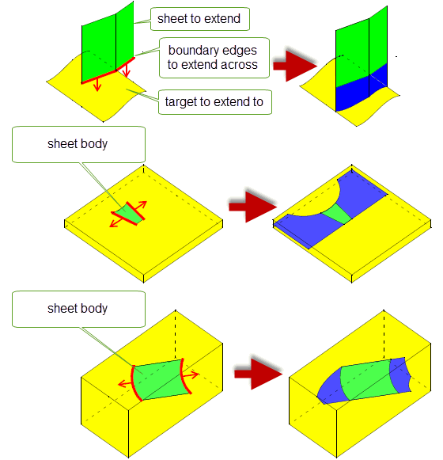
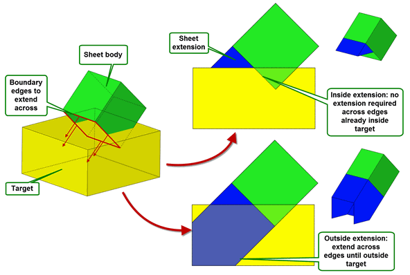
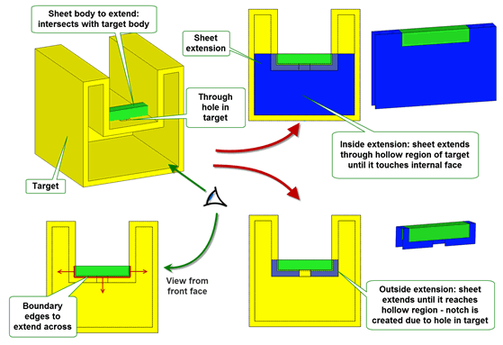
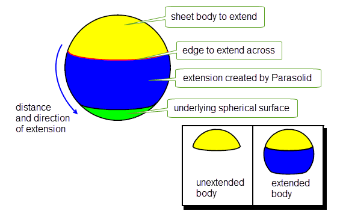
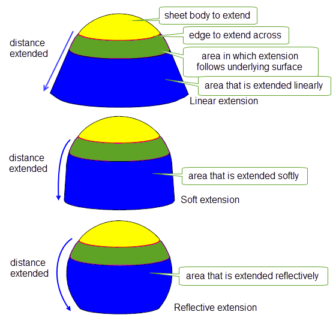
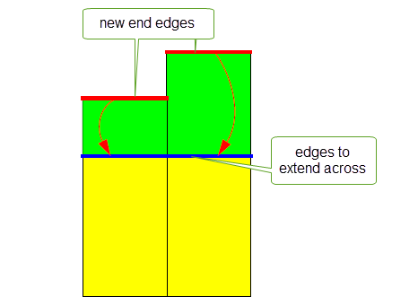
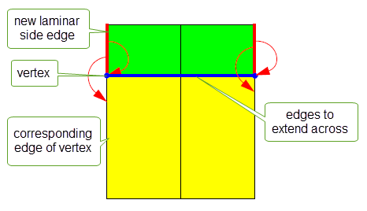

| |
Extending Sheets And Surfaces |
| <<< Mid-Surface Generation | Chapters | Introduction To Imprinting and Booleans >>> |
You can use PK_BODY_extend to extend across a set of laminar edges on a body. The body may contain non-manifold components, so long as the supplied laminar edges are locally manifold.
|
Note: This functionality offers partial support for facet geometry. |
PK_BODY_extend receives the following arguments:
|
|
|
|
boundary_edges |
An array of laminar edges belonging to the body: the body is extended across these edges. The edges do not need to form a single chain. |
The function has the following options:
modify |
Whether or not to modify the original faces of the body when extending. The default is to create new faces for the extension. See Section 49.1.6, “Changes to topology”, for more information. |
extension_type |
Whether to extend across the specified laminar edges of the body by a specified distance, or by extending across those edges until they meet a specified target body. See Section 49.1.2, “Different extension methods”, for more information. |
extension_shape |
The shape that the extension should have. You can choose between linear, soft and reflective extension. See Section 49.1.4, “Specifying the shape of the extension”, for more information. |
extension_distance |
The distance by which the body should be extended across the boundary edges, relative to the underlying surfaces of the body, when extending by a specified distance. See Section 49.1.2, “Different extension methods”, for more information. |
target |
A target body that intersects the extended body and is used to define the new boundary for the body. See Section 49.1.2, “Different extension methods”, for more information. |
target_limit |
Controls that let you specify where an extension to a target should stop. See Section 49.1.3, “Controlling extension to a target”, for more information. |
preserve_internal_smoothness |
Whether to preserve the smoothness across internal edges of the body after extension. See Section 49.1.5, “Preserving smoothness of extended edges”, for more information. |
track_laminar |
Provides control over the tracking information for new split laminar edges. See Section 49.1.9, “Tracking new edges”, for more information. |
track_internal |
Whether to track non-laminar side edges in the same way as laminar side edges. See Section 49.1.9, “Tracking new edges”, for more information. |
extend_create |
Whether to create new topology, or extend by splitting existing topology. See Section 49.1.6, “Changes to topology”. |
extension_boundary |
Whether or not to create precise extension boundaries. See Section 49.1.7, “Creating precise boundaries”. |
extend_side extend_side_data |
Whether extensions should follow adjacent edges and/or their extension on the body, or whether they should be created orthogonally to the base edge being extended. See Section 49.1.8, “Controlling the shape of sheet extensions”. |
update |
Update switch to maintain consistency when rebuilding models built in older versions of Parasolid. See Section 63.5.2, “Update control”, for information. Default: PK_local_ops_update_default_c. |
results_output |
Whether the local status and associated entities are returned as a return argument or in a Parasolid Report. See Section 49.1.10, “Return information”, for more information. Default: PK_results_output_return_c |
PK_BODY_extend provides the following methods for extending a body:
You control which extension method is used with the
extension_type
option in PK_BODY_extend_o_t.
|
This is the default extension method for PK_BODY_extend. The body is extended across each of the |
|
|
The body is extended across each of the |
Figure 49-1 Extending a body across locally manifold edges
Figure 49-2 shows a simple example in which a body is extended across two boundary edges of a sheet by a specific distance. New faces are created for the extension, although this behaviour can be controlled (see Section 49.1.6, “Changes to topology” for details).
Figure 49-2 Extending sheets by a specified distance
Figure 49-3 shows several cases where a sheet is extended to a specified target. In the first example, a sheet is extended until it intersects the swept surface of a nearby sheet target. In the other examples, a sheet is extended until it intersects a solid target that wholly encloses the sheet.
Figure 49-3 Extending sheets to a target body
If you extend a sheet body to a target, the sheet may often be able to intersect the target several times, for example if the target is a solid body. This can lead to different possible results for the extension operation. You can use the
target_limit
option to control which of those results is used.
The
target_limit
option can control the extension shape as follows:
Figure 49-4 shows a simple example in which the side faces from an open sheet cube are extended until they intersect a solid target body. Two results are possible:
target_limit
is PK_extension_limit_inside_c, then the faces are extended until they intersect the target faces closest to the sheet cube. Notice that no extension is necessary at any point where the boundary edge is already inside the target.
target_limit
is PK_extension_limit_outside_c, then the faces are extended through the target until they intersect the target faces furthest to the sheet cube.In this example, the default extension to the target would produce the same result as PK_extension_limit_inside_c.
Figure 49-4 Extending a sheet until it reaches the inside or outside of a target body
In some cases, for example if you are extending to a hollow body target that intersects the sheet body, the default extension may produce the same result as PK_extension_limit_outside_c. For example, consider the sheet body shown in Figure 49-5. Here, a U-shaped sheet is extended to a hollow target that the sheet already intersects. As well as being hollow, the target body contains a through hole that effects the shape of the resulting extended sheet.
Figure 49-5 Extending a sheet to a hollow target body
|
Note: The result bodies for both the PK_extension_limit_outside_c case and default case in
Figure 49-5 contain a notch. This is because the through hole in the target body causes no extension to be created in the sheet across the extent of the hole: the body is
already outside the target in this area, and so does not need to be extended. The result body for PK_extension_limit_inside_c, however, does
not contain this notch, because in this case the sheet needs to be extended until it reaches the inside of the target body. |
When extending faces in a sheet, PK_BODY_extend follows the shape of any underlying surface as far as possible. In particular, analytic surfaces are preserved. For example, Figure 49-6 shows the effect of extending a sheet body whose underlying surface is a sphere.
Figure 49-6 Using the underlying surface to extend a sheet
When the requested extension lies beyond the scope of the underlying surface, Parasolid has to create its own surface. You can use the
extension_shape
field to determine the shape that PK_BODY_extend follows when this is the case. This field takes the following values:
|
Note: The values PK_extension_shape_arc_c and PK_extension_shape_natural_c, as used in PK_BCURVE_extend and PK_SURF_extend, are not valid for use with PK_BODY_extend. |
Figure 49-7 illustrates the difference between these types of extension shape. In this figure, the underlying surface of the sheet body is a B-surface that resembles an incomplete sphere. Beyond the B-surface, the sheet has been extended linearly in the first example, softly in the second and reflectively in the third.
Figure 49-7 The difference between various shapes of extension
For the sake of clarity, the soft extension diagram in Figure 49-7 is exaggerated. In practice, the angular deviation between a linearly extended surface and a softly extended surface is about 3°. Figure 49-8 illustrates the effect of linear extension and soft extension on a constant parameter that is extended.
|
Note: When extending linearly, a G2 discontinuity may be created at the boundary of the underlying surface. |
Figure 49-8 The difference between linear and soft extension for curves
By default, if you extend an edge that is smooth (that is, the faces on either side of the edge are tangent to each other at the point where the edge intersects the edge to extend across), that smoothness is not preserved in the extended body. You can set the
preserve_internal_smoothness
field to PK_extension_smoothness_g1_c in order to preserve G1 smoothness whenever possible, as shown in
Figure 49-9.
Figure 49-9 Preserving the smoothness of extended internal edges
Parasolid can modify the topology of the resulting sheet, depending on the setting of the
modify
field, which takes the following values:
In addition, you can use the
extend_create
option to control how topology is created with respect to the way attributes attached to the topology are processed. This takes the following values:
|
Topology is newly created for the extension, without any attributes from the original topology. This is the default. |
|
|
New topology is split from the original topology. Any attributes attached to the original topology are processed according to the attributes’ rules for split events: they will either be deleted from both entities or propagated to both entities. See Section 96.4.4, “Split”, for information about split events. |
In both cases if the new topology is subsequently merged with original topology during the extend, then any attributes are processed according to their rules for merge events.
The
modify
and
extend_create
options combine to create different effects. These are shown in
Figure 49-10, which shows how a single face with an attached colour attribute (blue) can be extended using all possible combinations of
modify
and
extend_create
. The resulting faces are either shown in blue, to indicate the propagation of the colour attribute, or yellow, to indicate that no attribute is attached to that face. The settings for each resulting body are described in the following table:
|
|
A new face is split from the original and then merged back in. Attributes are processed for split and merge events. |
|
|
|
A new face is split from the original. Attributes are processed for split events. |
|
|
|
A new face is created from the original and then merged back in. Attributes are processed for merge events. |
|
|
|
A new face is created from the original. Attributes are not processed. This is the default behaviour. |
Figure 49-10 The effect of the
modify
and
extend_create
options when extending sheets
|
Note: In the example shown in
Figure 49-10, processed attributes are shown as being copied onto new faces. For attributes of type 1, 4, 6, or 7, (e.g., colour, density), this is the expected behaviour. However, for attributes of type 2, 3, or 5, (e.g. incremental faceting) whose behaviour is that they are deleted when a split event occurs, then the results will be different to those shown. |
Sometimes when you are extending sheets by distance, the exact shape of the boundary of the extended sheet may be irrelevant for your needs. This is particularly true if you intend to trim away some of the extension using subsequent modelling operations. In these circumstances, you only need to ensure that you create an extension that is large enough for your requirements, and creating a precise extension can be costly in terms of performance.
PK_BODY_extend provides the
extension_boundary
option for use in this type of case. The behaviour of this option is shown in
Figure 49-11.
extension_boundary
to PK_extension_boundary_loose_c, PK_BODY_extend creates a loose boundary that is a rough measure of the extension distance. Creating a loose boundary can reduce complexity of the boundary and improve operation performance; however, detailed tracking information is not returned and by definition the boundary is not in general precise. Figure 49-11 Creating precise and loose boundaries when extending sheets
You can use the
extend_side
and
extend_side_data
options to control the shape of the extension when extending sheets across laminar edges. These options let you choose how to construct the side edges required, so that extensions either follow adjacent edges and/or their extension in the body, or are orthogonal to the base edge being extended.
Two options are provided so that you can control the extension shape in two ways, as follows:
extend_side |
Controls the shape of extensions across laminar edges for the whole body by constructing side edges in different ways. This can take any of the following values:
|
extend_side_data |
This structure allows you to specify different extension shapes at selected terminal vertices of edge chains in the body. It allows you to override the behaviour specified by
Extensions at any terminal vertices of edge chains that are not specified here are controlled according to the value of |
Figure 49-12 shows the different results that can be achieved by setting
extend_side
and
extend_side_data
while extending two laminar edges on a face:
extend_side
appropriately, you can construct side faces that either both follow adjacent edges and/or their extension, or are both orthogonal to the base edge.
extend_side_data
, you can control the behaviour at each end of the edge chain individually.Figure 49-12 Controlling the shape of extensions across laminar edges
PK_BODY_extend returns tracking information for end edges and side edges that are created during the extend operation, allowing you to associate these new edges with the topology that they originated from.
PK_BODY_extend associates any end edges created by the extend operation with the original edges that they were created from, as shown in Figure 49-13.
Figure 49-13 Tracking end edges
By default, PK_BODY_extend associates any laminar side edges created by the extend operation with the vertex that the side edge was created from, together with the unique originating side edge, if there is one. This is illustrated in Figure 49-14.
Figure 49-14 Tracking laminar side edges
Sometimes, a laminar side edge cannot be tracked to a single unique edge. In such cases, PK_BODY_extend associates the new side edge with the vertex that it was created from by default. However, you can return additional tracking information using the
track_laminar
option. PK_BODY_extend_o_t also provides the
track_internal
option for tracking non-laminar side edges. You use these options as follows:
track_laminar |
Controls the amount of tracking information returned for new side edges. It takes the following values:
Figure 49-15 illustrates the difference between the two values. Note: The setting of this option has no effect on the tracking information returned for side edges that are created from a unique edge, such as the example shown in Figure 49-14. |
track_internal |
Whether or not to return tracking information for non-laminar side edges that are created. This takes the following values:
|
Figure 49-15 Tracking side edges that cannot be associated with a single unique edge
You can return information using the
results_output
option. This allows you to choose to either return the local status and associated entities as a return argument or in a Parasolid Report using the following values:
|
Return a complete list of multiple fault entities and fault types in a Parasolid Report. In addition, when the operation succeeds report records with the following statuses are generated: These provide information on the edges that were not extended across because those extensions were not needed. See the PK Interface Programming Reference Manual for PK_BODY_extend for more information on the local statuses returned. |
See Chapter 11, “Using Reports”, for more information about the Parasolid Report mechanism.
You can extend surfaces of any class (except foreign geometry surfaces) using PK_SURF_extend. This function take as arguments a surface to modify and an options structure that specifies the type of extension required. It returns a status flag that indicates the outcome of the operation.
|
Note: This functionality offers partial support for facet geometry. |
You can extend a surface in any of four ways:
Figure 49-16 Extending a surface (a) to a specified point (b) to a specified box
Each type is specified using fields in the options structure, as described in the table below. The default values for these fields are set such that no extension is performed to a surface supplied to PK_SURF_extend.
|
The point to extend to, if extending to a point. Ignored otherwise. |
|
|
The box to extend to, if extending to a box. Ignored otherwise. |
|
|
The parameter box to extend to, if extending to a parameter box. Ignored otherwise. |
|
|
Ratio of the u parameter range by which to extend the low u boundary, if extending by ratio. Ignored otherwise. Default: 0.0 |
|
|
Ratio of the u parameter range by which to extend the high u boundary, if extending by ratio. Ignored otherwise. Default: 0.0 |
|
|
Ratio of the v parameter range by which to extend the low v boundary, if extending by ratio. Ignored otherwise. Default: 0.0 |
|
|
Ratio of the v parameter range by which to extend the high v boundary, if extending by ratio. Ignored otherwise. Default: 0.0 |
|
|
If the extension requested would result in an invalid surface, then setting this option to PK_LOGICAL_true attempts to extend the surface as far as possible, while keeping the surface valid. If PK_LOGICAL_false, then no extension is performed at all in cases where an invalid surface would result. Default: PK_LOGICAL_false |
|
extension_shape |
The shape that the extension should have. The choices available depend on the type of surface, and any attached topology or owning geometry. See Section 49.2.2, “Specifying the shape of the extension”, for more information. |
update |
Update switch to maintain consistency when rebuilding models built in older versions of Parasolid. See Section 49.2.4, “Update control”, for information. |
For each of the
x
_ratio
options, a ratio of 1.0 extends the relevant boundary by 100%. The effect of extending different boundaries by different amounts is shown in
Figure 49-17.
Figure 49-17 Extending a surface by ratio
The effect of setting
allow_partial_extension
is shown in
Figure 49-18. In the example shown, extending the specified surface to the point shown would result in a self-intersection, thereby creating an invalid surface.
allow_partial_extension
is PK_LOGICAL_false, then no extension is performed.
allow_partial_extension
is PK_LOGICAL_true, then the surface is extended as far as the point of self-intersection, as indicated in the illustration.Figure 49-18 Partially extending a surface that would otherwise be invalid
For B-surfaces that are not attached to topology or owned by other geometry, the
extension_shape
field determines the shape of the surface created by Parasolid. This field takes the following values:
|
Parasolid extends the surface in a direction (which is usually linear), which is the default direction for the surface type. See Section 49.1.4, “Specifying the shape of the extension”. |
|
|
Parasolid extends the surface in a direction that tends toward linear after a small change. See Section 49.1.4, “Specifying the shape of the extension”. |
|
|
Parasolid extends the surface using an algorithm that mirrors the existing geometry of the surface. See Section 49.1.4, “Specifying the shape of the extension”. |
|
|
Parasolid adds a new section that has constant radii of curvature in the direction of the extension, and matches the surface with G2 continuity. A cross-section taken through the new section would be a circular arc. |
|
|
Parasolid extends the surface “naturally”, continuing the shape described by the original surface just before the start of the extension. The new surface is infinitely continuous (C-infinity) at the boundary. |
Figure 49-19 illustrates the different shapes available for extending B-surfaces. See also Figure 18-28 of Section 18.5.5, “Extending B-curves”.
Figure 49-19 The difference between various shapes of extension
PK_SURF_extend returns a status flag to indicate the result of the operation. This can take the following values:
If your application relies on reproducing behaviour when updating models created using earlier versions of Parasolid, you should use the
update
option to preserve old behaviour and help eliminate differences in rebuild results. This option lets you disable some surface extension enhancements that have been added at different Parasolid versions. Doing this ensures that PK_SURF_extend gives the same results in the latest version of Parasolid as in earlier versions. See PK_surf_extend_update_t in the
PK Interface Programming Reference Manual for more information on this
update
option.
| <<< Mid-Surface Generation | Chapters | Introduction To Imprinting and Booleans >>> |